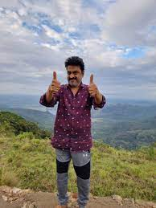
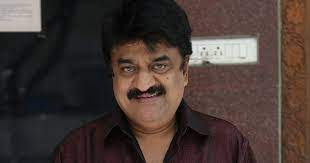

Biography
 Chinni Jayanth is an Indian film director, producer, comedian, actor and mimicry artist who has appeared in many main, character and supporting roles in Tamil films. He is also a popular television personality having hosted hit shows like Sagalai Vs Ragalai, Kalakka Povathu Yaar and Asathapovathu Yaaru on Sun TV in Chennai.
He is also a recipient of the Kalaimamani award given by the Government of Tamil Nadu for excellence in the field of cinema. He received this award from the Chief Minister of Tamil Nadu at a glittering function at Valluvar Kottam.